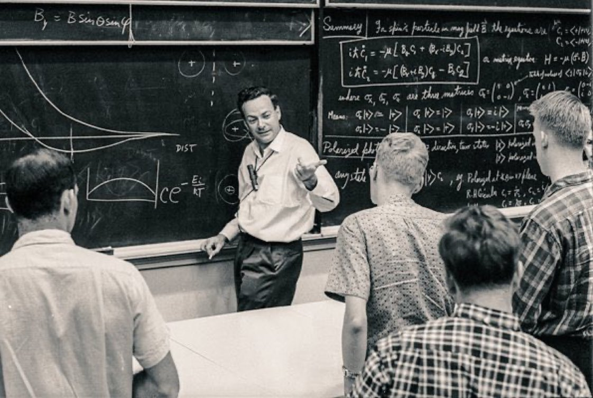

Richard Feynman
The Mind Who Unveiled the Universe

Richard Feynman Teaching
- 1918 - Born on May 11 in Queens, New York
- 1935 - Graduates from Far Rockaway High School at the age of 17
- 1939 - Receives a bachelor's degree in mathematics from the Massachusetts Institute of Technology (MIT)
- 1942 - Earns a Ph.D. in physics from Princeton University, working on the development of the atomic bomb as part of the Manhattan Project during World War II
- 1945 - Begins teaching physics at Cornell University
- 1947 - Joins the faculty of the California Institute of Technology (Caltech) as a professor of theoretical physics
- 1950 - Develops the Feynman diagram, a visual representation of mathematical expressions in quantum field theory
- 1956 - Publishes "The Theory of Fundamental Processes," a book that consolidates his work on quantum electrodynamics, for which he receives the Nobel Prize in Physics in 1965
- 1965 - Awarded the Nobel Prize in Physics jointly with Julian Schwinger and Sin-Itiro Tomonaga for their fundamental work in quantum electrodynamics
- 1967 - Delivers the famous lectures known as the Feynman Lectures on Physics, which are later compiled into a widely influential three-volume textbook
- 1974 - Serves as a key member of the Rogers Commission, investigating the Space Shuttle Challenger disaster
- 1986 - Publishes the book "Surely You're Joking, Mr. Feynman!" which recounts his adventures and experiences as a scientist
- 1988 - Diagnosed with abdominal cancer
- 1988 - Passes away on February 15 at the age of 69